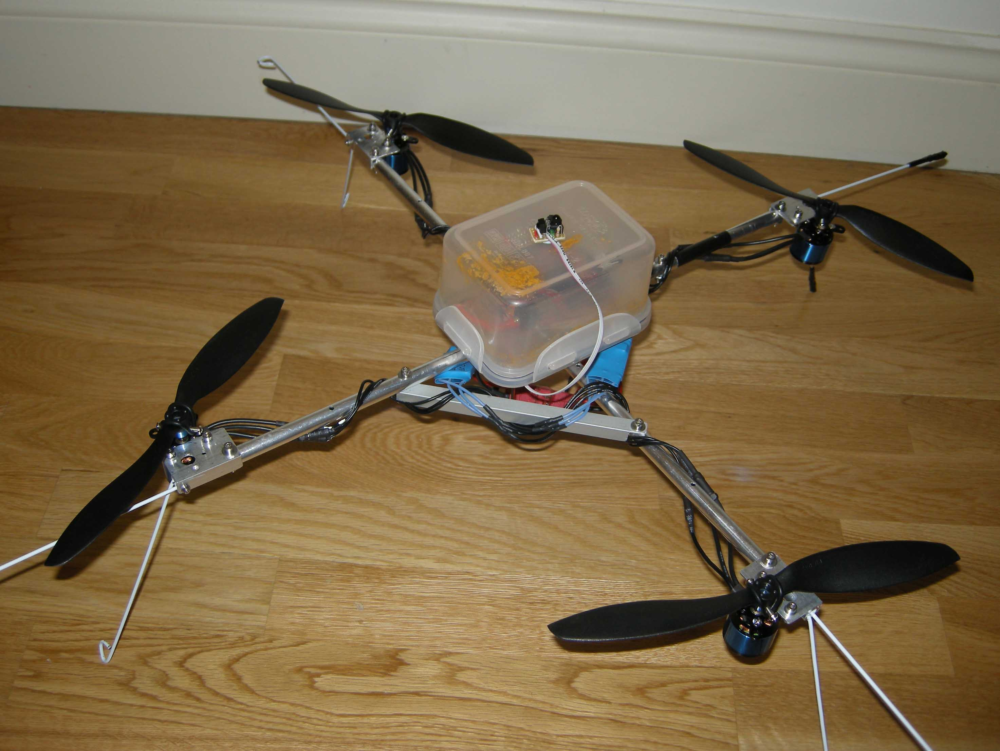

The Bot -- Linda Bulk and Robert Brouwer
 IDEA
IDEA

“Every idea starts with a problem, Linda and I were doing commercial photography and dreamt about getting an image from the sky without the cost of a helicopter. I had always been fascinated by flight and radio controlled planes and one day we saw a very crude remote controlled model with a camera attached. It didn’t really do the job but we knew if the technology could be sorted this could be the answer”
Linda Bulk and Robert Brouwer